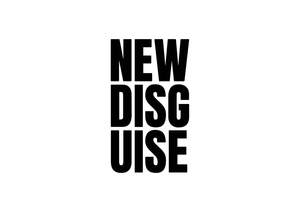
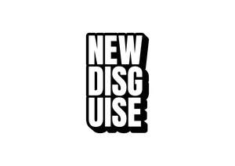

Trade Mark Journal No.2025/037 12 September 2025
UK00004237865 22 July 2025 (9,14,16,18,25)
Mark 1

Mark 2

- Class 9
- Cases and covers for glasses, sunglasses, smartphones, tablet computers, or electronic devices; sunglasses; eyeglass frames; chains and cords for eyeglasses and sunglasses; magnets.
- Class 14
- Precious metals and their alloys and goods in precious metals or coated therewith, not included in other classes; badges of precious metal; jewellery; articles of jewellery; jewellery holders and cases; watch cases; keyrings; keychains; key fobs; clocks; watches; watch straps; watch bands.
- Class 16
- Printed matter; bookbinding material; photographs; stationery and office requisites, except furniture; covers, cases and holders for passes; covers, cases and holders for passports; holders for golf scorecards; holders for stamps; document holders [stationery]; leather folios; notebook covers; document covers; book covers; notebooks; notepads; stationary cases; pencil cases; gift cards.
- Class 18
- Leather and imitation leather; bags; cases; handbags; wallets; purses; luggage; holdalls; rucksacks; sports bags; saddle belts; leather shoulder belts; fitted belts for luggage; key cases; notecases; briefcases; luggage labels (tags), luggage label holders; leather or imitation leather makeup or toiletry bags; leather or imitation leather covers, holders and containers; leather boxes; cases of leather; straps of leather; leather pouches; leather card holders; covers, cases and holders made of leather or imitation leather for cards, passes, papers or for documents; folios cases; art portfolios (cases); portfolios cases (briefcases); umbrellas and parasols.
- Class 25
- Clothing, footwear, headgear; belts (clothing); leather belts(clothing); belts made from imitation leather; casual clothing, hooded sweatshirts, jeans, printed t-shirts, lined and unlined jackets, short sleeve and long sleeve shirts, baggy shorts, long sleeve embroidered t-shirts, printed and embroidered sweatshirts, trousers, fleece pullovers, socks, skirts, scarves, gloves, underwear.
YOSHI GOODS LIMITED
Representative: Barker Brettell LLP